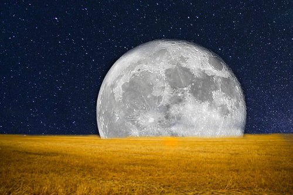
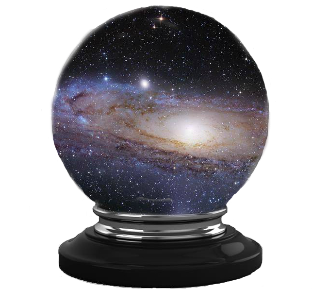

The Pecuilar Wonders of Haling Cove, Maine

The Night Field
Nova Flint always knew that Haling Cove, Maine was weird. However, she didn't expect it to be this weird when she witnessed a moon coming out of their local field.
Created: November 12, 2019

Galaxy Crystal Ball
Within Mrs. Brevel's attic lies a crystal ball that shows the beauty of the universe to those who wants to see it.
Created: November 13, 2019